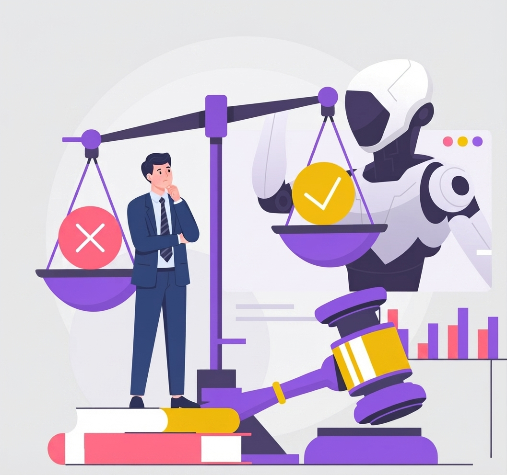
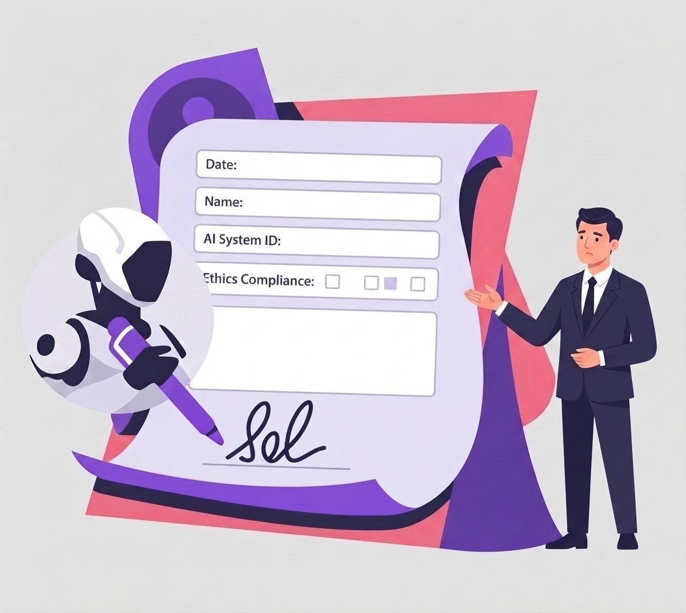

Acerca de
Conocé el origen de AR-AI, los objetivos de este observatorio académico y el propósito de facilitar un acceso transparente y estructurado a la gobernanza de datos.
AR-AI es un espacio diseñado para centralizar, clasificar y analizar el marco normativo de la Inteligencia Artificial en Argentina. Facilitando a profesionales del derecho, ingenieros y tomadores de decisiones el acceso a las disposiciones vigentes y el análisis de la madurez tecnológica del país frente a los estándares internacionales.

Conocé el origen de AR-AI, los objetivos de este observatorio académico y el propósito de facilitar un acceso transparente y estructurado a la gobernanza de datos.
Explorá el directorio normativo de Argentina. Accedé a las resoluciones de la AAIP, guías de la SIGEN, decretos del Poder Ejecutivo y proyectos de ley vigentes.
Analizá la posición de Argentina en el Government AI Readiness Index de Oxford. Descubrí el desempeño del país en infraestructura, datos y políticas públicas.
¿Encontraste un nuevo decreto, disposición sectorial o proyecto legislativo? Ponete en contacto para sugerir actualizaciones en nuestro repositorio centralizado.
